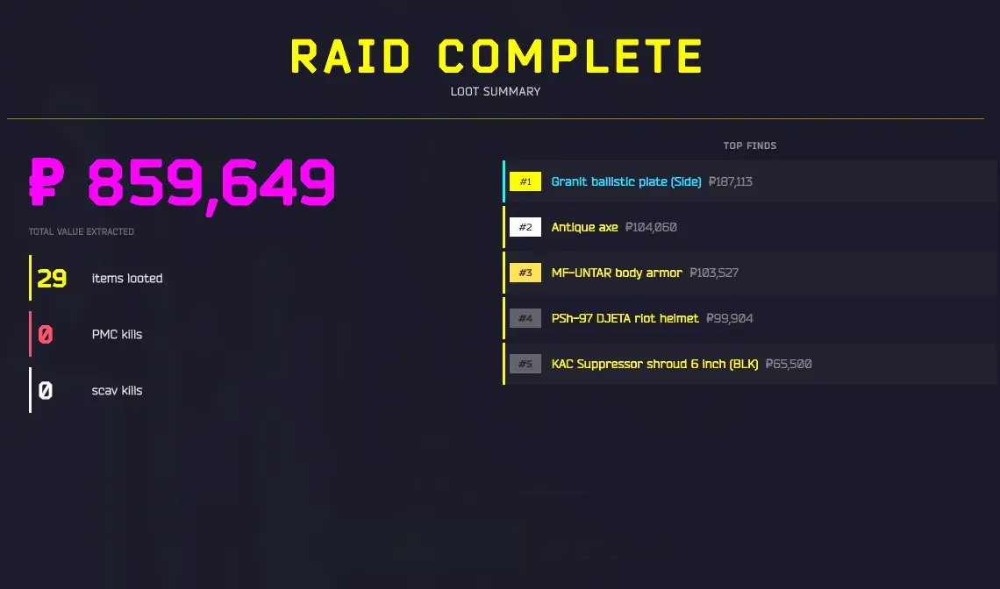
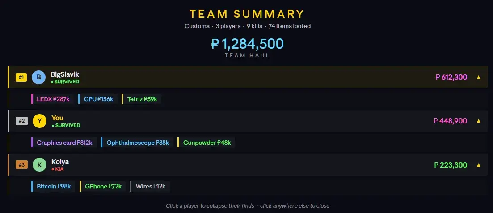

LootNET
- Downloads
- 12,570
- Favourites
- 48
- Mod lists
- 109
UI label style inspired by ShowLootValueInRaid by HiddenCirno
Loot value while you play
There’s a counter in your inventory screen that adds up the flea value of everything you’re carrying. It updates as you pick things up. If an item isn’t on the flea, it uses the handbook price instead.
Summary when you extract
When you make it out, you get a full screen breakdown of the raid: total value, your 5 best finds, how many items you grabbed, your kills, and the XP you earned. It closes on its own after a few seconds, or you can click to skip it. You can change that in the F12 menu.
Raid history
There’s a HISTORY button added to the main menu. It opens a panel with a card for each raid you’ve done this session, showing the map, whether it was a PMC or Scav run, the loot value, and your kills. It keeps the last 15.
PMC and Scav runs
On PMC raids it only counts the stuff you found, not your starting gear. On Scav raids it includes your spawn loadout,
Pricing
Prices are pulled from flea market, so they match what you’d actually see. If something isn’t listed there, it falls back to the handbook price. By default it counts everything, but there’s an option to only include items that cant really be sold on the flea, so the total reflects what you’d actually make rather than what stuff is theoretically worth.
PIT Fireteam
If you have PIT Fireteam installed, LootNet picks up on it automatically. Your teammates show up in the summary with their kill counts, and squad kills are included in the history panel.
Preview

Fika preview

Version
1.0.9
changes
- Loot values now come from live flea market offers instead of the base price table, so custom or inflated flea prices (e.g. an SVM x10 flea) are reflected in raid value. Items with no live offer fall back to the base price
added
- Team & personal high scores (Fika) the coop scoreboard now remembers records across raids. Each player’s loot bar fills toward their personal best, with a marker showing the record to beat, and the combined team haul tracks the squad’s all-time best under the hero total
- Records persist to disk on the server (survive restarts) and are shared across the Team, so everyone sees the same marks and celebrates together; personal bests count team raids only
hotfix
-
fixed items counting as more as they are in the summary
-
thats all have a good day! :D
Version
1.0.8
Fika
- redesigned the summary
fixes
- hopefully fixed the weird value dropping or increasing when loading / unloading mags
Version
1.0.7
Fika update!
- added Fika support
- new summary UI when useing with Fika (WIP will change in the future)
- team haul shows the total value of everyones loots in one big pool
- Fika headless should work i hope but i didn test it i m to lazy to setup a headless client
Hotfix
- fixed fika Dependency issue
Version
1.0.6
Added
- XP earned tracking
- Survival/extract bonus is detected separately and slides in as a sub-label, with the main XP number animating up to the new total
- Death summary no more cheerful “RAID COMPLETE” when you bled out
- In-Raid Inventory Counter toggle new F12 config option to hide the running loot value counter that appears in your inventory during a raid (still tracks in the background for the summary)
- Default Flea Market Rules toggle new F12 config option (default ON) to only count items that can be sold on the flea market toward raid value disable if you use a mod that unlocks the flea filter
- Quest items excluded quest items are now always filtered out of the raid value regardless of price source,
Changed
- Teammates redesign PIT Fireteam squad members now appear as horizontal cards in the left column under the stat rows, instead of a stacked list at the bottom of the panel
Hotfix
GUID issue should be fixed now
Version
1.0.5
Added
- Raid History panel new
HISTORYbutton in the main menu opens a side drawer with a full log of raids from the current session restarting the sever WIPES the history!- Each card shows map name, raid type (PMC / SCAV), time since the raid, total loot value, and kill summary
- PIT Fireteam squad kills are included in the kill line when the mod is present
- History is capped at 15 entries; a notice appears at the bottom of the list when the cap is reached and older entries start being dropped
- Manual dismiss raid summary screen can now be set to require a click to close instead of auto-dismissing (toggle in F12 BepInEx config)
Version
1.0.4
Identical items are now grouped in the raid summary (e.g. “Intelligence Folder x11”) <– idea from Random Eye from fika discord thanks for the idea!
Redesigned raid summary
New UI sounds on stat reveals
Version
1.0.3
added safe guards and InRaid check i though i wont need it but i was wrong
Version
1.0.2
Fixed loot value inflating when shifting items around in inventory bug report by @GoldChimera
Version
1.0.1
-re release i made a mistake with the build
Added handbook price toggle should work with custom traders
Version
1.0.0
release!